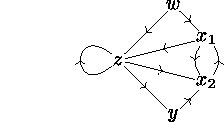
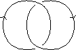
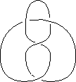
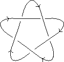
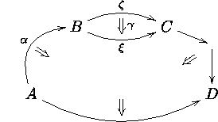
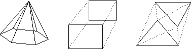
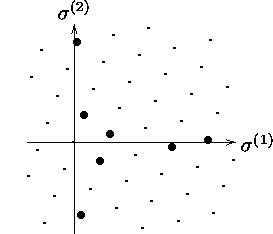
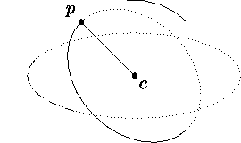

Xy-pic User's Guide 


The reference manual [8] describes several more
input modes that are useful when the diagram is not organised as a
matrix. We'll give some examples of such diagrams but refer to the
reference manual for the details.
- The "graph" feature allows input of data structured as
directed graphs to make it easy to produce such
pictures as

- The "knot" feature allows drawing of mathematical knots and links like
|

|

|

|
|
simple link
|
figure 8-knot
|
cinquefoil
|
- The "2cell" feature provides special support for
categorical twocells like

- The "poly" feature allows polygon-like
structures:

- The "web" feature allows composition in lattices such as

- The "arc" feature is suitable for effects like

In each case the figure is produced with relatively few lines using
techniques documented in the respective sections of the reference
manual together with the details of the Xy-pic kernel and
extensions, "arrow," and "matrix" features as used in this guide;
further extensions provide support for use of colour, PostScript effects,
and much more.
Finally, the following documents might prove useful: How to Typeset Pretty Diagram Arrows with TeX [6]
presents some of the design decisions behind Xy-pic,
Xy-pic and Notation for Categorical
Diagrams [7] explains how the modularity of Xy-pic
can be used to obtain complex effects with commutative diagrams, and
Typesetting Neural Nets using Xy-pic [4] explains how neural
networks can be typeset using the package. Finally, a collection of
complex examples is maintained on the Xy-pic home page and the ftp
servers discussed above.
Xy-pic User's Guide
© Kristoffer H. Rose
<krisrose@brics.dk>
January 6, 1997
/
LaTeX2HTMLv96.1-h